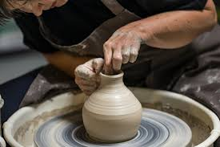

A student watched a potter transform ordinary clay into beautiful bowls, cups, and decorative pieces. What looked like mud became something valuable through creativity, patience, and skill. That is the world of Ceramics.
Ceramics is the art and science of creating objects from clay and other ceramic materials through shaping, drying, firing, and decoration. It combines creativity, craftsmanship, design, and technology.
Many students think Ceramics is only about making pots. In reality, ceramics is used in architecture, interior decoration, engineering, medical technology, manufacturing, and industrial production. It is both an art and a science.
This is only a small introduction. If you want to understand how programmes connect to university courses, careers, opportunities, and future success, get a copy of:
The guide designed to help students make informed decisions about their future and discover opportunities they may never have considered.